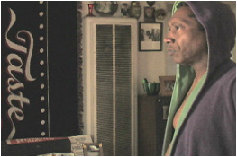

Biographies
Actor/Producer Lionel Mark Smith was born in Chicago, Illinois where he sharpened his acting skills in David Mamet’s Second City Theater productions. After making the move to Los Angeles, Smith spent thirty years acting in films such as Homicide, The Mod Squad, Magnolia, Spartan, as well as numerous hit television shows such as Lou Grant, The Shield, and most recently in CBS’ The Unit. Smith served as a catalyst in the making of the provocative 2006 indie film, Edmond. He donned a producer cap and also acted in the film. Before Smith’s untimely passing after a long and brave battle against cancer, he made a brilliant appearance as “Sam” in Stuart Gordon’s Stuck. When asked about Smith, longtime friend David Mamet wrote, “He never made anything up, he always told the truth, and every scene and every project was better for his presence.” Larry (the actor) is lovingly dedicated to the memory of the incomparable Lionel Mark Smith.
Writer/Director Eric Poydar graduated from Tufts University and studied film at the Museum School at the Museum of Fine Arts in Boston. Poydar’s 35mm short, About Barbers (adapted by the Mark Twain classic of the same title), which he wrote, produced and directed, screened at the Woods Hole Film Festival, the Northampton Film Festival, and the Boston Comedy Film Festival. In 2001 Poydar teamed with Brett Portanova to form Bootleg Productions, LLC. Together they penned 4Vienna, a finalist in the Scriptapalooza Screenwriting Contest and a semi-finalist in the I.F.P. Pipedream Screenwriting Contest. Poydar is currently in post-production on Larry (the younger), Bootleg Productions’ surreal answer to Larry (the actor).
Writer/Producer Brett Portanova earned a B.A. from Gettysburg College with a major in Philosophy and a concentration on Creative Writing and Writing for the Stage & Screen. He worked on the sets of Blue Diner and The Business of Strangers as a member of both the cast and crew. After meeting as production assistants on the set of David Mamet’s State & Main, Portanova joined Eric Poydar as co-writer of the award-winning screenplay, 4Vienna. The writing team formed Bootleg Productions, LLC, and shot the faux documentary, Larry (the actor). They are currently in post-production on its surreal counterpart, Larry (the younger), as well as penning an untitled feature-length project.
Cinematographer Scott D. Davis earned a BA at Emerson College and began working on films in Boston in 1984. Davis made his way up through the ranks from truck driver to Director of Photography, working as a grip, key grip, and gaffer along the way. With the likes of major features such as The Departed, Mystic River, Moonlight Mile, and The Human Stain padding his resume, Davis is proudest of his achievement as a husband of fifteen years and father to three of the “best kids in the world.” Davis continues to work on feature films and commercials in the Boston area, while finding recreation and solace as an avid body surfer in his hometown of Newburyport, MA.
Copyright 2008, Bootleg Productions, LLC. All rights reserved.